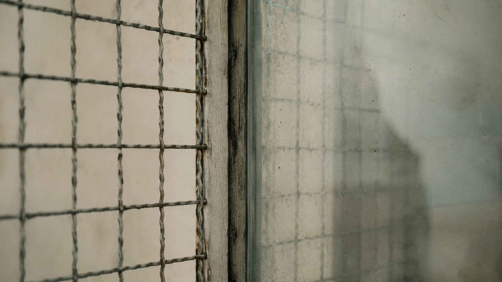
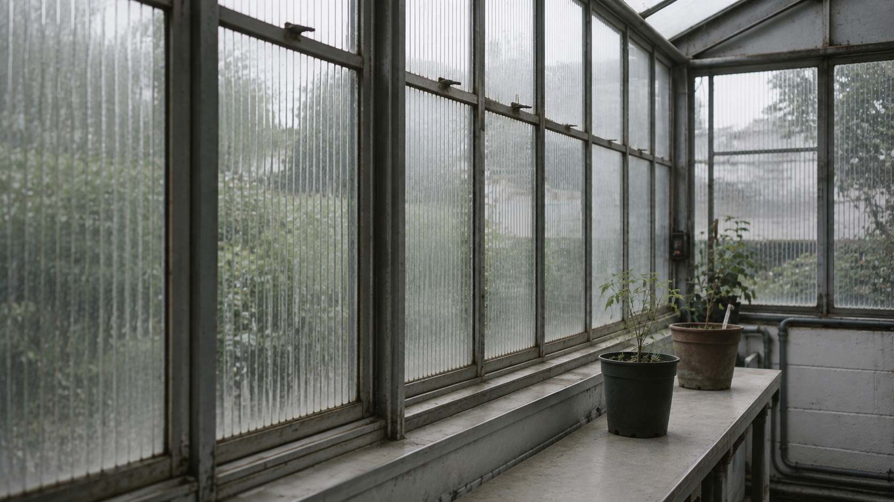
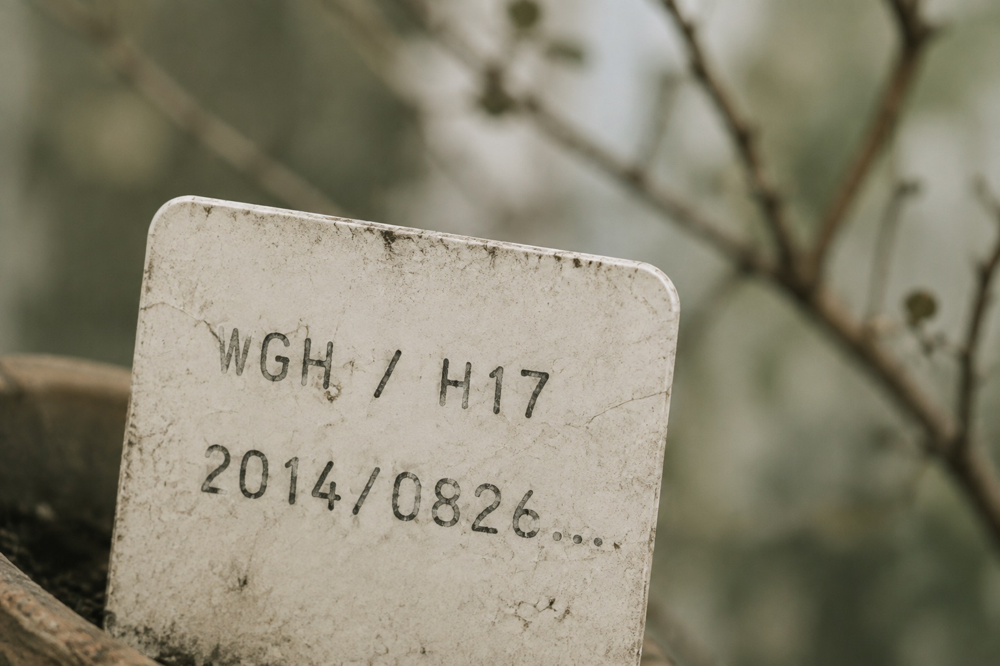
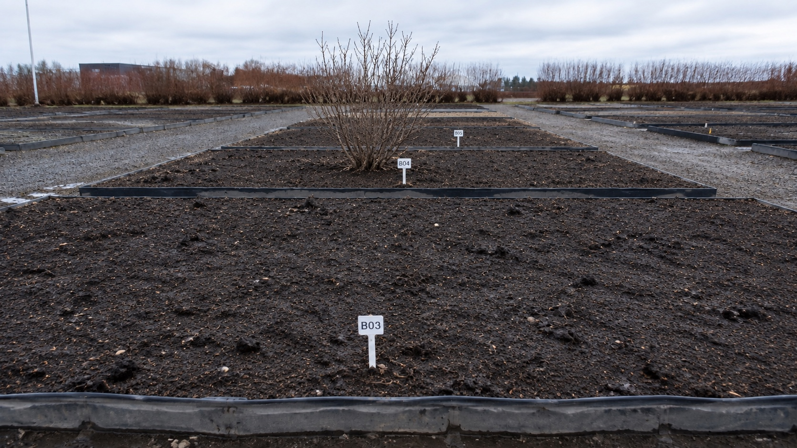
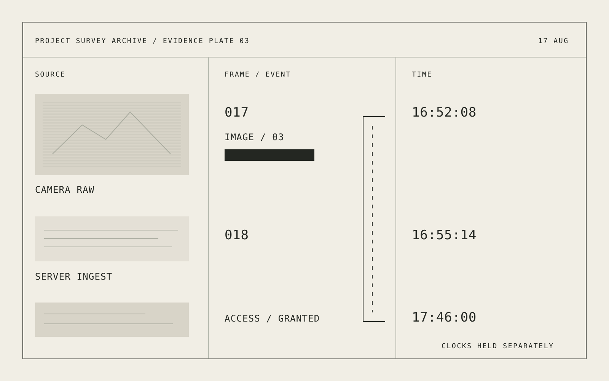

Images / fragments / process
Visual archive
Visual residue, indexed as the work develops.
Titles and identifiers remain fixed catalogue fields.









13 studies visible / frame · study · record · plate